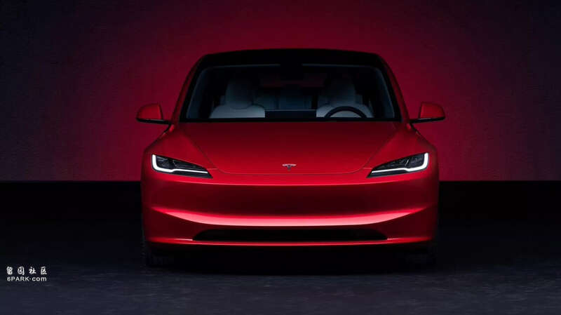
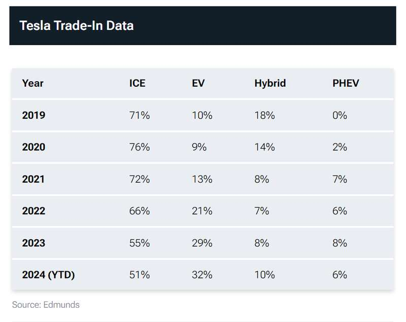

IT之家 8 月 5 日消息，据 Edmunds 的最新研究，2024 年超过一半的美国特斯拉车主放弃了电动汽车，转投燃油车怀抱，仅有 32% 的车主继续选择纯电动车型。

具体来看，51% 的特斯拉车主转向了传统燃油车，10% 选择了混合动力车型，6% 选择了插电式混合动力车型。这一趋势与麦肯锡公司近期的一项调查结果相吻合，该调查显示，近一半（46%）的美国电动车主可能会在下次购车时回归燃油车。

虽然这一数据乍看之下对特斯拉和整个电动汽车市场来说是个坏消息，但实际上最新数据与过去的数据相比有了重大改善。根据 Edmunds 的数据，2020 年，高达 76% 的特斯拉车主放弃了电动汽车，转向燃油车，只有 9% 选择了其他电动车型，而这一比例自此之后稳步下降。
这一趋势的变化可能意味着，随着时间的推移，在美国使用电动汽车变得越来越容易。然而当前的统计数据表明，要让电动汽车对更广泛的公众更具吸引力，仍需做出重大改进。
IT之家注意到，另一个有趣的现象是，越来越多的买家正在用其他传统汽车制造商的电动汽车取代特斯拉。考虑到特斯拉从电动汽车开拓者到如今面对众多主流市场竞争对手的转变，这一趋势多少是可以预见的。
Advertisements